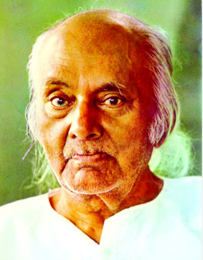

Kazi Nazrul Islam is the national poet of Bangladesh who is espescially recognized
as a Bidrohi Kobi (rebel poet) around the country Nazrul is a famous poet, muscian
and philospher of Bangladesh. The famous poet Nazrul's writings deal with the revolutiona
of that period of Bangladesh government. His revolutionary attempt helped him to be a
national poet of Bangladesh. He has raised his voice for any kind of fascism and oppersion and got popularity
swiftly around the Indian Subcontinents.
Awesome Writer
Nazrul's writings exploerd themes such as love,freedom,humanity and revolution. He
opposed all form of bigotry and fundamentalism, including religious, caste-based and gender-based
throughout his carrer. Nazrul wrote his short stories,novels and essays but he is best known
for his songs and poems. He pioneered new music forms such as Bengali ghazals. Nazrul wrote
and composed music for nearly 4000 songs (Many recorded in HMV and gramophone record)
,collectively known as Nazrul's Geeti

"Love has no meaning or amount." - Kazi Nazrul Islam
Awards
Jagattarini Gold Medal 1945 From the university of Calcutta for his
work in Bengali Literature. Padma Bhusan 1960 One of the highest civilian honors of the
Republic of India. National Poet - Conferrd the title by the Government of
Bangladesh Ekushey Padak 1976 Bangladesh's highest civilian honors.
Poetry
Agni Bina (The Fiery Lute),1922
Sanchita (Collected poems),1925
Phanimanasa (The Cactus),1927
Chakrabak (The Flamingo),1929
Satbhai Chamba (The Seven brothers of Chamba) the junevile poems,1933
Nirjhar (Fountain),1939
Natun Chand (The New Moon),1939
Morubhaskar (The Sun in the Desert),1951
Sanchanyan (Collected Poems),1955
Nazrul Islam: Islamic Kobita (A Collection of Islamic poems: Dhaka,Bangladesh:
Islamic Foundation,1982)
Poems and Songs
Dolan Chapa (name of fainty fragrant monsson flower),1923
{kind=link}